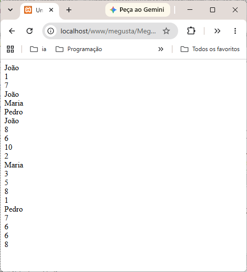

| Arquivo: dados.json |
| { "aluno" : [ {"nome":"João", "provas": [ { "nota":8 }, {"nota":6}, {"nota":10 }, {"nota":2 } ] }, {"nome":"Maria", "provas": [ { "nota":3}, {"nota":5}, {"nota":8 }, {"nota":1 } ] }, {"nome":"Pedro", "provas": [ { "nota":7}, {"nota":6}, {"nota":6 }, {"nota":8 } ] } ] } |
| Arquivo: json.html |
|
<!doctype html> <html lang="pt-br"> <head> <meta charset="utf-8"> <meta name="viewport" content="width=device-width, initial-scale=1.0"> <title>Untitled Document</title> </head> <body> <script> function rPrintln(message = "") { if (typeof document !== "undefined" && document.body) { document.body.innerHTML += message + "<br>"; } console.log(message); } function openResponse(textHTML, callback) { const handler = typeof callback === 'function' ? callback : (typeof rOpenFileWebJS === 'function' ? rOpenFileWebJS : null); if (handler) { handler(textHTML); } } function AjaxJS(url, callback) { if (typeof window !== 'undefined') { let req = null; if (window.XMLHttpRequest) { req = new XMLHttpRequest(); req.onreadystatechange = function () { if (req.readyState === 4) { if (req.status === 200) { const textHTML = req.responseText; openResponse(textHTML, callback); } else { openResponse('', callback); } } }; req.open('GET', url, true); req.send(null); return req; } if (typeof window.ActiveXObject !== 'undefined') { try { req = new ActiveXObject('Msxml2.XMLHTTP.4.0'); } catch (e) { try { req = new ActiveXObject('Msxml2.XMLHTTP.3.0'); } catch (e2) { try { req = new ActiveXObject('Msxml2.XMLHTTP'); } catch (e3) { try { req = new ActiveXObject('Microsoft.XMLHTTP'); } catch (e4) { req = false; } } } } if (req) { req.onreadystatechange = function () { if (req.readyState === 4) { if (req.status === 200) { const textHTML = req.responseText; openResponse(textHTML, callback); } else { openResponse('', callback); } } }; req.open('GET', url, true); req.send(); return req; } } } if (!fs) { throw new Error('File access is unavailable in this environment.'); } try { const textHTML = fs.readFileSync(url, 'utf8'); if (typeof callback === 'function') { callback(textHTML); } return textHTML; } catch (err) { if (typeof callback === 'function') { callback(''); } console.error(err.message); return ''; } } AjaxJS("dados.json", function (textHTML) { if (!textHTML) { console.error('Não foi possível carregar dados.json.'); return; } var dados = textHTML; var jsonData = JSON.parse(dados); rPrintln(jsonData.aluno[0].nome); // Escreve o nome do primeiro aluno: "João". rPrintln(jsonData.aluno[1].provas[3].nota); // Escreve a nota da última prova da Maria. rPrintln(jsonData.aluno[2].provas[0].nota); // Escreve a nota da primeira prova do Pedro. for (let i = 0; i < jsonData.aluno.length; i++) { rPrintln(jsonData.aluno[i].nome); } // escreve o nome de todos os alunos for (let i = 0; i < jsonData.aluno.length; i++) { rPrintln(jsonData.aluno[i].nome); for (let j = 0; j < jsonData.aluno[i].provas.length; j++) { rPrintln(jsonData.aluno[i].provas[j].nota); } } // escreve o nome e todas as notas de todos os alunos }); </script> </body> </html> |